| Take | Hero at 1024, then renders at 128 / 64 / 48 / 32 / 16 css px (2× retina sources), plus the 16px squint magnified | Rubric | Verdict |
|---|---|---|---|
| master · icon.svgEngine A, hand-authored layered SVG from build_icon.py — SHIPS |       |
11 / 12 | Checks 1–4 clear on the renders: the family squircle from the shared path, ink centred at (518, 499) with margins of 161px or more, a filled-black silhouette that names itself as a gateway, and a 16px read of dark mass plus bright opening plus one warm cap that survives the shelf strip beside all 35 siblings. Figure-ground 3.13:1 by the dilated-ring measure, which is the register's hard part — the two raster takes came in at 1.75:1 and 1.98:1. One key, one Lambert term: top course 0.318 > front face 0.256 > right flank 0.142, and the recesses computed from the same vector, so the housing (back wall 0.167, side wall 0.130) sits below the front face rather than beside it. Docked #8, depth coherence: the housing is a stopped mortise rather than the full-depth cut a real missing keystone would leave. Painted as a through-void it read as a decanter in negative space, twice, at two tapers — the fiction buys the whole silhouette. |
| engineC-2 · icon-engineC-9aca22-2.pngEngine C, GPT Image 2, four corpus references — material target | 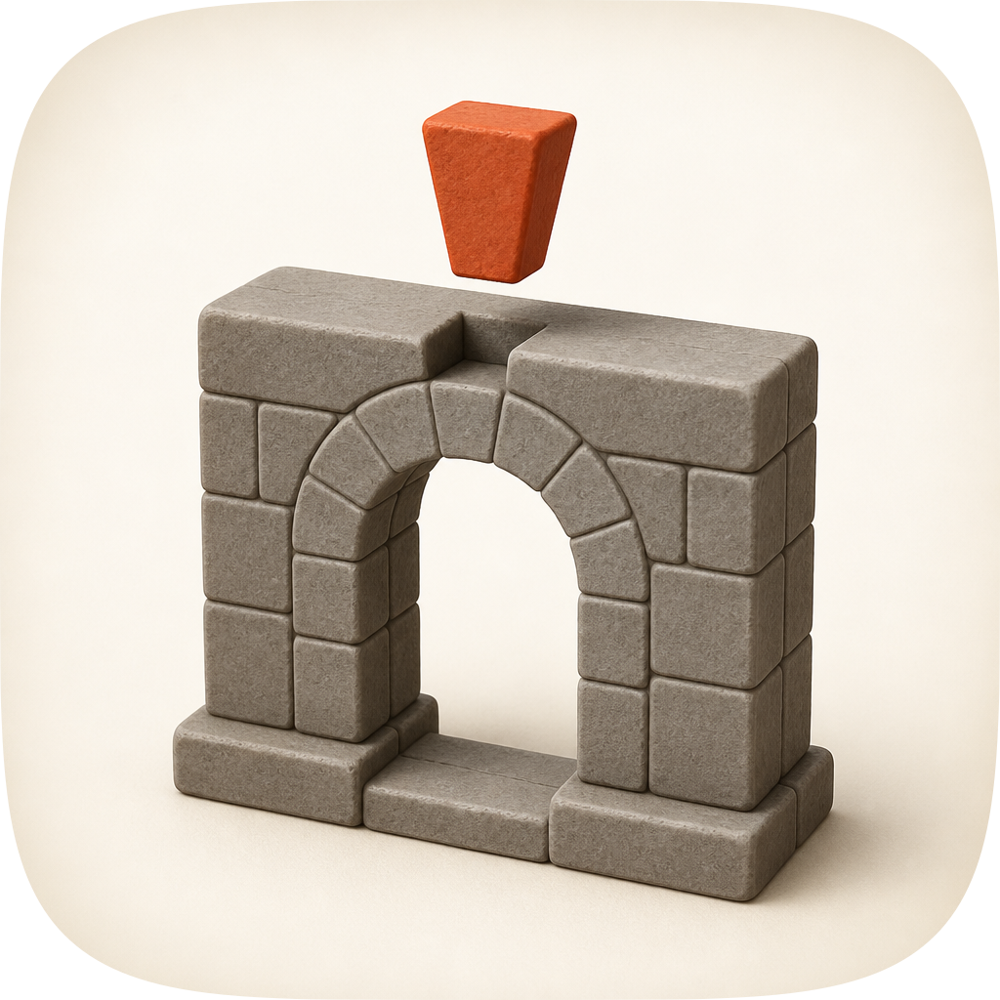 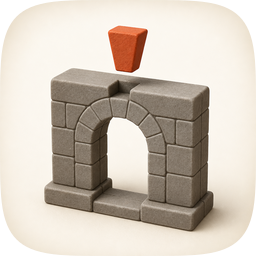 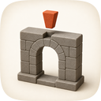 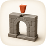 |
9 / 12 | The best material in the set, and the reason the master was rebuilt twice: individually dressed voussoirs with real mortar joints, a stepped plinth, matte-satin clay with a short soft contact shadow, and a keystone whose proportion reads instantly. It cannot ship. Fails #4 — pale sandstone at object median luminance 0.458 on porcelain leaves 1.98:1, so at 32px the gateway is a grey smudge and by 16px only the ember wedge survives; fails #7 on the same number, and #10 because it is a flat pre-masked raster with no layers. Salvaged into the master: the two-course plinth, and the two-stroke mortar joint (dark groove plus a pale lip 3px up-key) that turns incised lines into separate stones. |
| engineC-1 · icon-engineC-561389.pngEngine C, GPT Image 2, same brief and references | 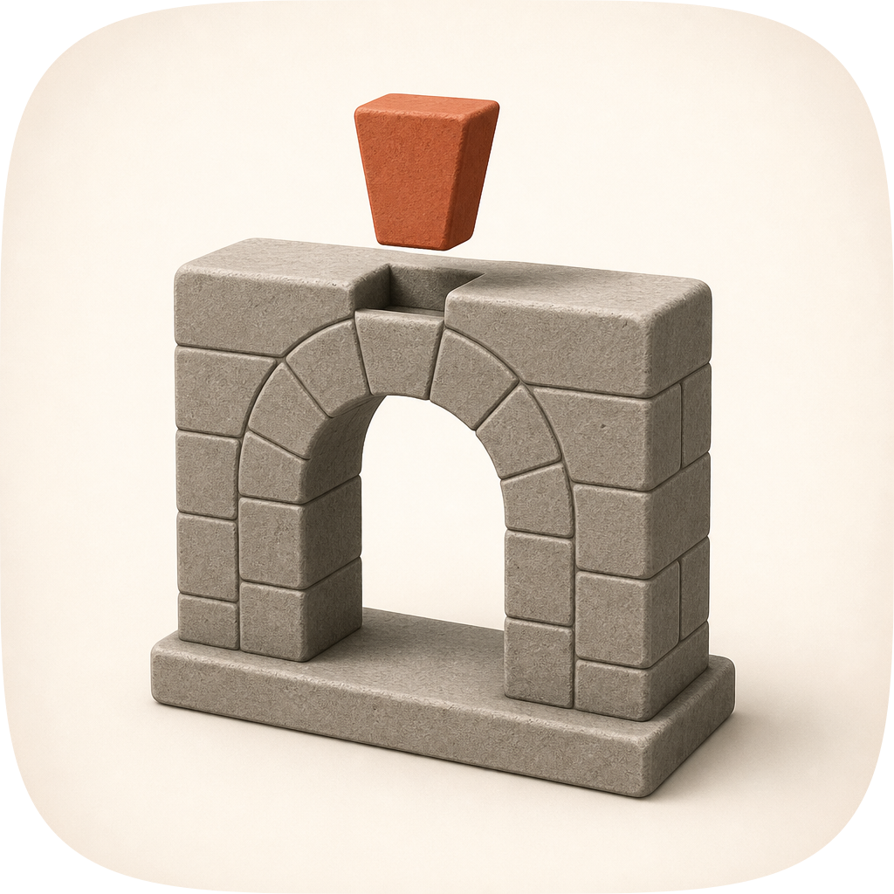 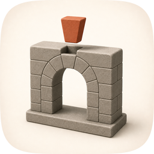 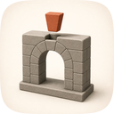 |
9 / 12 | The same object one step worse on every axis that decides the commission: paler stone still (object median 0.528, figure-ground 1.75:1, the weakest in the set), a smaller keystone at 2.37% of the tile, and a housing so shallow it reads as a chip rather than a socket. Lost to engineC-2 on accent size and on the depth of the notch, and to the master on #4, #7 and #10 for the same reasons. Kept on disk because it is half the evidence that the porcelain register has a figure-ground ceiling a diffusion model will always sit under. |
| engineB-arrow · icon-engineB-arrow-1acc57.svgEngine B, Arrow 1.1 vector take from the spec as brief | 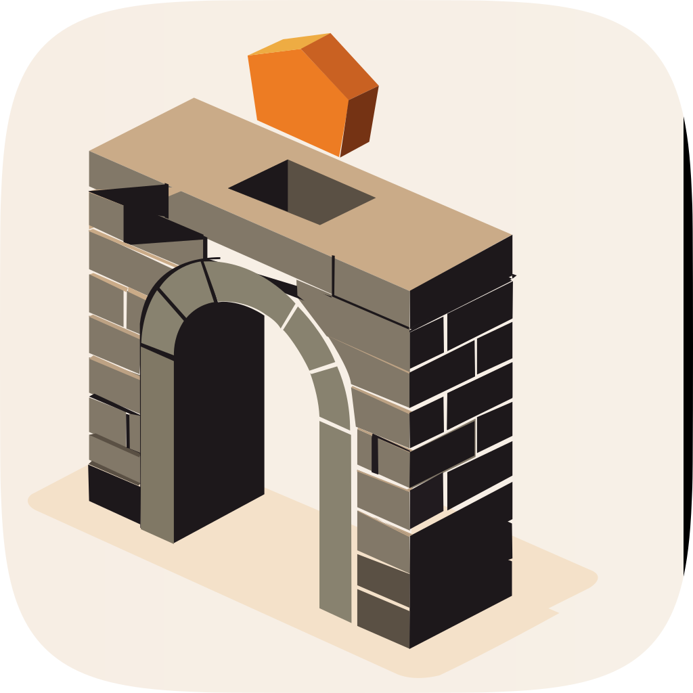 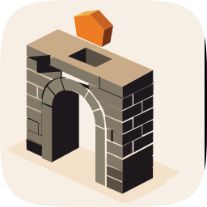 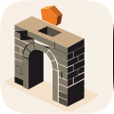 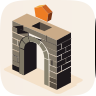 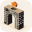 |
6 / 12 | Converged on the same object independently, which is the useful thing it produced: three engines briefed once all drew a gateway with a socket in its crown and the wedge above, so the device reads without explanation. As an icon it loses everywhere. Fails #1 — a 144.7×152.6 canvas with a full-bleed ground and no squircle discipline, audited letterboxed; #5, face values assigned per shape with no shared light; #7 and #4, since the openings are drawn near-black voids that swallow the arch at 32px; #9, flat isometric vector, previous era; #10, no layer plan. Nothing salvaged: its socket is a rectangular hole punched in a top slab, which is the reading the master's aligned wedge exists to avoid. |